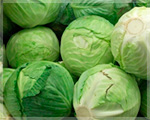

Nos produits Tomates Légume très timide, rougit en prenant des formes. Navets Qui veut un bon navet, le sème en janvier.  Choux Mon pauvre chou, celui qui veut grandir boit la soupe à choux. Patates Peut importe le temps, la patate est présente tout le temps.
Bienvenue Potiron 2.0 est un site amap. Ce site a été fait pour être en contact avec nos clients et pouvoir répondre à leurs besoins.